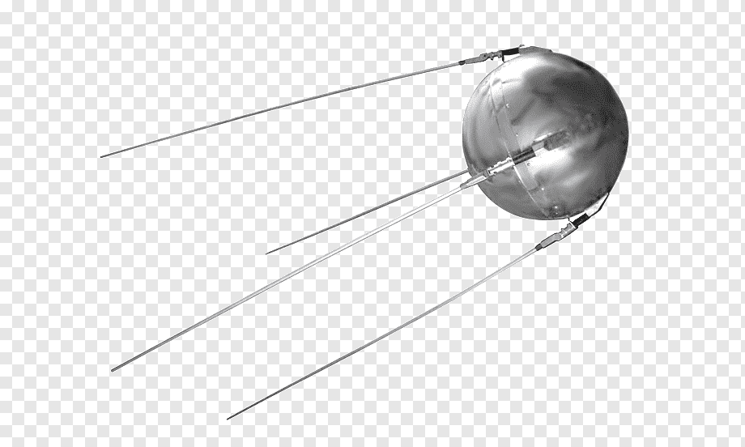
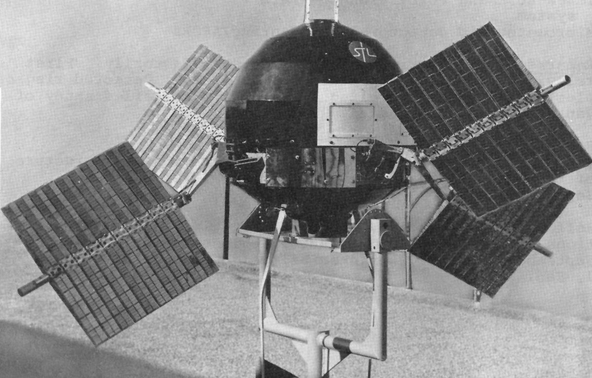
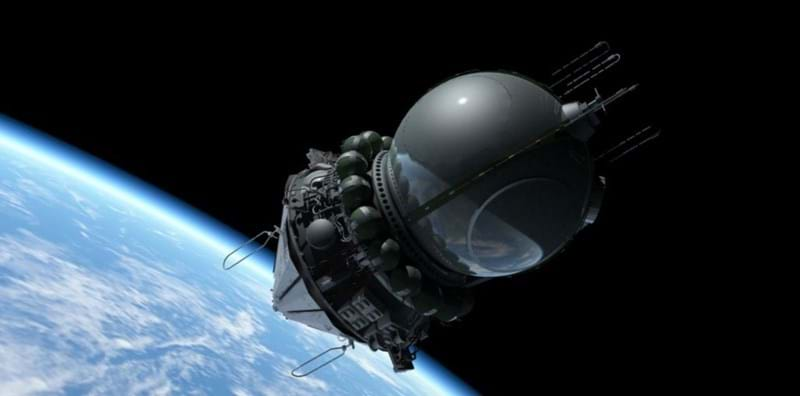

O Sistema Solar é composto por uma estrela, o Sol, e todos os objetos celestes que orbitam ao seu redor. O Sol é uma estrela do tipo G2V, que fica no centro do sistema solar, e é responsável por fornecer luz e calor para todos os planetas e outros corpos celestes que compõem o sistema. Os oito planetas do sistema solar, em ordem de distância do Sol, são: Mercúrio, Vênus, Terra, Marte, Júpiter, Saturno, Urano e Netuno. Além dos planetas, existem também planetas anões, como Plutão, e muitos outros corpos celestes menores, como asteroides e cometas. Cada planeta tem suas próprias características únicas, como tamanho, atmosfera, temperatura, número de luas e composição química. Os planetas orbitam o Sol em órbitas elípticas, com diferentes períodos orbitais. Além dos planetas, o sistema solar é composto por uma grande quantidade de asteroides, que orbitam principalmente entre Marte e Júpiter, e cometas, que podem ter órbitas muito excêntricas que os levam até as regiões mais distantes do sistema solar. O estudo do sistema solar é importante para entender a história e a evolução do nosso próprio planeta, bem como para investigar a possibilidade de vida em outros planetas e luas dentro do nosso sistema solar e além.

O Sol é uma estrela de tamanho médio que se encontra no centro do Sistema Solar. É a estrela mais próxima da Terra e fornece a energia que sustenta toda a vida em nosso planeta. O Sol é composto principalmente de hidrogênio e hélio, e é mantido em equilíbrio pela combinação de duas forças opostas: a gravidade, que puxa a massa do Sol para o centro, e a pressão, que empurra a massa para fora. O Sol tem uma temperatura de cerca de 5.500 graus Celsius na sua superfície, e a temperatura em seu núcleo é de cerca de 15 milhões de graus Celsius. O Sol emite luz e calor através da fusão nuclear, um processo em que átomos de hidrogênio se combinam para formar átomos de hélio, liberando uma grande quantidade de energia. O Sol tem um diâmetro de cerca de 1,4 milhão de quilômetros, o que é cerca de 109 vezes o diâmetro da Terra, e leva cerca de 25 dias para completar uma rotação em torno de seu próprio eixo. Além disso, o Sol leva cerca de 225 a 250 milhões de anos para completar uma órbita em torno do centro da Via Láctea. O Sol é a fonte primária de energia para todo o Sistema Solar, e suas erupções solares e vento solar têm um impacto significativo na magnetosfera da Terra e nos sistemas de comunicação e energia da Terra. O Sol também é um objeto fascinante para estudo científico, e muitas missões foram enviadas para estudar sua estrutura, dinâmica e impacto no espaço e no clima da Terra. Em resumo, o Sol é uma estrela de tamanho médio que fornece a energia para sustentar toda a vida na Terra, e é um objeto fascinante para estudo científico.
Mercúrio é o planeta mais próximo do Sol e o menor planeta do sistema solar, com um diâmetro de cerca de 4.880 quilômetros. Ele orbita em torno do Sol a uma distância média de aproximadamente 58 milhões de quilômetros e completa uma órbita completa em torno do Sol a cada 88 dias terrestres. Devido à sua proximidade com o Sol, a temperatura na superfície de Mercúrio pode atingir até 427°C durante o dia e cair para -173°C durante a noite. Isso faz de Mercúrio o planeta mais quente e mais frio do sistema solar. A superfície de Mercúrio é marcada por enormes crateras de impacto, cadeias de montanhas e falhas tectônicas. A superfície do planeta é coberta por uma fina camada de poeira e pequenos fragmentos rochosos, e não há atmosfera significativa. A falta de uma atmosfera significa que o planeta não tem proteção contra a radiação solar e cósmica, tornando a superfície de Mercúrio um lugar extremamente hostil. Apesar de sua proximidade com o Sol, a missão MESSENGER da NASA, que estudou Mercúrio entre 2011 e 2015, descobriu que o planeta abriga água congelada em crateras permanentemente sombreadas perto dos polos. Essa descoberta foi uma surpresa, já que as temperaturas na superfície de Mercúrio são tão extremas. Devido às suas características únicas e proximidade com o Sol, Mercúrio continua sendo um objeto fascinante de estudo para cientistas planetários.


Vênus é o segundo planeta do Sistema Solar em ordem de distância do Sol, localizado entre Mercúrio e a Terra. É um planeta rochoso, com um diâmetro de cerca de 12.104 quilômetros, ligeiramente menor que a Terra. Vênus é frequentemente chamado de planeta irmão da Terra, devido ao fato de serem similares em tamanho, massa e composição. No entanto, as semelhanças param por aí. Vênus é um dos planetas mais inóspitos do sistema solar, com uma superfície infernalmente quente, com temperaturas que chegam a 460 graus Celsius, e uma atmosfera densa, tóxica e rica em dióxido de carbono. A densa atmosfera de Vênus é composta principalmente de dióxido de carbono, com nuvens de ácido sulfúrico. Essa atmosfera espessa faz com que o planeta seja o mais brilhante no céu noturno, depois da Lua, e é frequentemente visto como a "Estrela da Manhã" ou a "Estrela da Tarde". Vênus tem uma rotação muito lenta, levando 243 dias terrestres para completar uma rotação em torno do próprio eixo. Além disso, a rotação de Vênus é retrógrada, o que significa que o planeta gira na direção oposta à maioria dos outros planetas. O período orbital de Vênus ao redor do Sol é de cerca de 225 dias terrestres. Apesar das condições extremas na superfície, Vênus é um alvo importante para a exploração planetária. Várias missões espaciais, incluindo a recente missão da Agência Espacial Europeia chamada Venus Express, estudaram a atmosfera e a superfície de Vênus para tentar entender melhor a geologia e o clima do planeta.
A Terra é o terceiro planeta do Sistema Solar, localizado a uma distância média de cerca de 150 milhões de quilômetros do Sol. É um planeta rochoso, com um diâmetro de aproximadamente 12.742 quilômetros, e é o único planeta conhecido a abrigar vida em sua superfície. A Terra é um planeta único em muitos aspectos. Ele possui uma atmosfera que é composta principalmente de nitrogênio e oxigênio, o que permite que a vida prospere em sua superfície. A água é abundante na Terra, e é um dos principais componentes que sustentam a vida. A Terra é o quinto maior planeta do Sistema Solar em massa, com uma gravidade que é cerca de 2,5 vezes maior que a de Marte. Sua rotação em torno do próprio eixo leva cerca de 24 horas, o que é o que define o dia e a noite na Terra. Além disso, a Terra leva cerca de 365 dias para completar uma órbita completa em torno do Sol, o que define o ano terrestre. A superfície da Terra é marcada por enormes cadeias de montanhas, vastos oceanos, extensos desertos, florestas tropicais e muito mais. A geologia da Terra é complexa e diversa, com vários tipos diferentes de rochas, vulcões, terremotos e atividade tectônica. A Terra é o lar de milhões de espécies de vida, incluindo seres humanos. A biosfera da Terra é uma rede complexa de ecossistemas interconectados que abrigam vida em uma ampla gama de condições, desde os ambientes mais extremos até os mais delicados. A exploração da Terra continua a ser um desafio constante para cientistas e pesquisadores. A compreensão da Terra e suas complexidades é fundamental para o desenvolvimento da ciência e tecnologia, bem como para o bem-estar humano e a sustentabilidade do planeta.

A Lua é o único satélite natural da Terra e o quinto maior do Sistema Solar. É também o objeto celestial mais próximo de nós, localizado a uma distância média de cerca de 384.400 quilômetros. A Lua exerceu uma influência significativa na cultura, na mitologia e na ciência ao longo da história humana. A Lua tem uma série de características distintas. Sua superfície é coberta por crateras, planícies vulcânicas chamadas de mares lunares, montanhas, vales e escarpas. A superfície lunar é marcada por uma grande quantidade de crateras de impacto, resultado de bilhões de anos de bombardeio por meteoroides e asteroides. As maiores crateras têm nomes famosos, como a Cratera Tycho e a Cratera Copérnico. A Lua tem um diâmetro de cerca de 3.474 quilômetros, o que é aproximadamente um quarto do tamanho da Terra. Ela orbita nosso planeta em sincronia com a rotação da Terra, o que significa que sempre mostra a mesma face para nós. Isso resulta no fenômeno conhecido como "lado oculto da Lua", que não é visível da Terra. A presença da Lua desempenha um papel crucial na manutenção das condições da Terra. Ela exerce uma influência gravitacional que causa as marés oceânicas, além de ajudar a estabilizar o eixo de rotação da Terra, o que tem impacto direto no clima do nosso planeta. A exploração lunar começou nas décadas de 1950 e 1960, com missões espaciais pioneiras realizadas por várias nações. O ápice dessas missões ocorreu com o programa Apollo da NASA, que levou humanos à superfície lunar pela primeira vez em 20 de julho de 1969, com a missão Apollo 11. Ao todo, doze astronautas caminharam na Lua durante as missões Apollo. Desde então, houve várias missões não tripuladas à Lua por diferentes países. Recentemente, houve um renovado interesse na exploração lunar, com planos de retorno de humanos à Lua nas próximas décadas. Agências espaciais e empresas privadas estão trabalhando em missões para estabelecer uma presença sustentável na Lua e explorar seu potencial como uma base para futuras missões espaciais mais distantes, como Marte. Em resumo, a Lua é um objeto fascinante que tem desempenhado um papel significativo em nossa história, cultura e compreensão do espaço. Sua beleza noturna e sua influência na Terra tornam-na um alvo constante de exploração e pesquisa científica.
Marte é o quarto planeta do Sistema Solar, localizado após a Terra em relação ao Sol. É um planeta rochoso, com um diâmetro de cerca de 6.779 quilômetros, aproximadamente metade do tamanho da Terra. Marte é frequentemente chamado de "Planeta Vermelho", devido à cor avermelhada de sua superfície. Marte é um dos planetas mais estudados e explorados do Sistema Solar, com várias missões espaciais enviadas por várias agências espaciais, incluindo a NASA, a Agência Espacial Europeia e a Agência Espacial Russa. As missões espaciais de Marte têm como objetivo entender melhor a geologia, a atmosfera e a possibilidade de vida no planeta. Marte tem uma atmosfera muito fina, composta principalmente de dióxido de carbono. Sua superfície é marcada por enormes vulcões, grandes desfiladeiros e uma grande quantidade de crateras de impacto. A superfície do planeta é muito fria, com temperaturas que variam de -140 graus Celsius à noite até um máximo de cerca de 20 graus Celsius durante o dia. Há evidências de que a água existiu em Marte no passado, e algumas evidências sugerem que ainda pode haver água líquida abaixo da superfície. A presença de água é um ingrediente essencial para a vida como a conhecemos, o que faz de Marte um alvo importante para a busca de vida extraterrestre. Marte é também o lar de dois dos maiores vulcões do Sistema Solar, Olympus Mons e Elysium Mons. Olympus Mons é o maior vulcão conhecido em todo o Sistema Solar, com uma altura de mais de 21 quilômetros, o que o torna três vezes mais alto que o Monte Everest na Terra. A exploração de Marte continua a ser um objetivo importante para a pesquisa espacial. Várias missões futuras estão planejadas, incluindo a missão Mars Sample Return, que tem como objetivo trazer amostras de rocha marciana de volta à Terra para análise detalhada.


Júpiter é o quinto planeta do Sistema Solar, sendo o maior planeta em diâmetro, massa e volume. É um planeta gasoso, com uma atmosfera composta principalmente de hidrogênio e hélio, e é conhecido por suas manchas coloridas, que são tempestades violentas e gigantes que ocorrem em sua atmosfera. Com um diâmetro de cerca de 142.984 quilômetros, Júpiter é mais de duas vezes maior que todos os outros planetas do Sistema Solar juntos. Sua grande massa faz com que ele tenha uma gravidade muito forte, cerca de 2,5 vezes mais forte que a da Terra. Júpiter tem um período de rotação muito curto, de cerca de 10 horas, o que significa que um dia em Júpiter é muito mais curto que um dia na Terra. Além disso, Júpiter leva cerca de 12 anos terrestres para completar uma órbita completa em torno do Sol. A atmosfera de Júpiter é muito dinâmica, com tempestades poderosas, como a Grande Mancha Vermelha, que é uma tempestade que já dura há mais de 300 anos. Júpiter também tem muitas luas, com um total de 79 satélites naturais conhecidos até o momento, incluindo as quatro maiores: Io, Europa, Ganimedes e Calisto. Júpiter é um dos planetas mais estudados pelos cientistas, com várias missões espaciais enviadas para estudar suas luas, atmosfera e magnetosfera. A sonda Juno, da NASA, é a mais recente missão em curso, tendo chegado em órbita de Júpiter em 2016, com o objetivo de estudar a atmosfera e a estrutura interna do planeta. Júpiter é um planeta fascinante e importante para a exploração espacial, e os cientistas continuam a aprender mais sobre ele à medida que exploram o Sistema Solar.
Saturno é o sexto planeta do Sistema Solar e é conhecido por seus magníficos anéis. É um planeta gasoso, com uma atmosfera composta principalmente de hidrogênio e hélio, e é o segundo maior planeta em diâmetro, com cerca de 120.536 quilômetros. Saturno tem um período de rotação muito curto, de cerca de 10 horas e 39 minutos, o que significa que um dia em Saturno é relativamente curto em comparação com a Terra. Ele leva cerca de 29,5 anos terrestres para completar uma órbita completa em torno do Sol, o que significa que seu ano é muito mais longo do que o nosso. O que torna Saturno único e espetacular são seus anéis brilhantes e distintos, que foram descobertos pelo astrônomo italiano Galileo Galilei em 1610. Os anéis são compostos principalmente de gelo de água e partículas rochosas, e se estendem a uma distância de até 282.000 quilômetros a partir do centro do planeta. Os anéis são divididos em vários anéis principais, bem como anéis mais fracos e estreitos. Saturno também tem muitas luas, com um total de 82 satélites naturais conhecidos até o momento. A maior lua de Saturno, Titã, é uma das mais intrigantes, pois tem uma atmosfera densa composta principalmente de nitrogênio, metano e etano, e é a única lua no Sistema Solar com uma atmosfera significativa. A exploração de Saturno começou na década de 1970, com as missões Voyager da NASA, e desde então várias outras missões foram enviadas para estudar Saturno, seus anéis e suas luas. A sonda Cassini, uma colaboração da NASA, ESA e Agência Espacial Italiana, estudou Saturno e suas luas de 2004 até 2017, quando se desintegrou na atmosfera de Saturno, terminando sua missão em grande estilo. Saturno é um planeta fascinante e belo, com sua atmosfera colorida e seus magníficos anéis, e continua a intrigar e surpreender os cientistas e amantes da astronomia em todo o mundo.


Urano é o sétimo planeta do Sistema Solar, e é um dos quatro gigantes gasosos. É um planeta frio e distante, com uma atmosfera composta principalmente de hidrogênio, hélio e metano, que dá a Urano sua característica cor azul esverdeada. rano é um planeta grande, com um diâmetro de cerca de 50.724 quilômetros, mas é significativamente menor do que Júpiter e Saturno. Ele tem um período de rotação muito lento, de cerca de 17 horas terrestres, e leva cerca de 84 anos terrestres para completar uma órbita completa em torno do Sol. Urano é conhecido por sua inclinação axial extremamente alta, que significa que ele gira em um eixo inclinado em um ângulo de cerca de 98 graus em relação à sua órbita. Isso faz com que as estações em Urano sejam extremas e diferentes das estações na Terra e em outros planetas. Durante uma parte da órbita, um dos polos de Urano fica voltado diretamente para o Sol, enquanto durante outra parte da órbita, o polo oposto fica voltado para o Sol. Urano tem um sistema de anéis e muitas luas, com um total de 27 satélites naturais conhecidos até o momento. Sua lua mais famosa é Miranda, que tem uma superfície muito variada, com penhascos, crateras e cânions. A exploração de Urano começou na década de 1980, com a missão Voyager 2 da NASA, que estudou Urano e suas luas em 1986. Desde então, não houve outras missões enviadas para estudar Urano, mas acredita-se que o planeta possa ter um núcleo sólido e uma dinâmica interna interessante. Urano é um planeta fascinante e único, com sua inclinação axial extrema e sua cor azul esverdeada distintiva. Continua a ser objeto de estudo e curiosidade para os cientistas e entusiastas da astronomia.
Netuno é o oitavo e mais distante planeta do Sistema Solar, e é também o quarto gigante gasoso. É um planeta frio e escuro, com uma atmosfera composta principalmente de hidrogênio, hélio e metano, que dá a Netuno sua característica cor azul esverdeada. Netuno é um planeta muito grande, com um diâmetro de cerca de 49.244 quilômetros, e é um pouco menor do que Urano. Ele tem um período de rotação muito rápido, de cerca de 16 horas terrestres, e leva cerca de 165 anos terrestres para completar uma órbita completa em torno do Sol. Netuno tem um sistema de anéis e muitas luas, com um total de 14 satélites naturais conhecidos até o momento. A maior lua de Netuno é Tritão, que é interessante porque é a única grande lua no Sistema Solar que orbita em direção contrária à rotação do planeta. A atmosfera de Netuno é conhecida por seus ventos extremamente fortes, que são os mais rápidos registrados no Sistema Solar, com velocidades que chegam a mais de 2.100 km/h. Além disso, Netuno é conhecido por suas tempestades gigantes, incluindo a Grande Mancha Escura, uma grande mancha que é semelhante à Grande Mancha Vermelha em Júpiter. A exploração de Netuno é limitada, com apenas uma missão até agora, a Voyager 2 da NASA, que voou pelo planeta em 1989 e coletou informações importantes sobre sua atmosfera, anéis e luas. No entanto, acredita-se que Netuno tenha um núcleo rochoso sólido e uma dinâmica interna interessante, o que o torna um alvo interessante para futuras missões de exploração. Netuno é um planeta fascinante e misterioso, com sua atmosfera escura e tempestuosa, suas luas intrigantes e sua distância extrema do Sol. Continua a ser objeto de estudo e curiosidade para os cientistas e amantes da astronomia em todo o mundo.


Satélite é um corpo que acompanha ou gira em torno de outro, observado principalmente no campo da astronomia, seja ele artificial ou natural. Do ponto de vista da astronomia, um satélite seria tudo aquilo que orbita algo de maior tamanho, desde um planeta anão até galáxias inteiras (que orbitam outras de maior dimensão e força). Já no campo da astronáutica ciência que desenvolve máquinas que ocupam a atmosfera terrestre e o espaço, os satélites são objetos construídos pelo homem e que servem para mapear a superfície da Terra (fazendo fotografias da geografia do planeta, por exemplo), além de transmitir informações para todos os cantos do mundo e do Universo, eles sao conhecidos como Satélites artificiais. A palavra satélite ainda pode ser usada como uma analogia ao indivíduo que acompanha e admira intensamente outra pessoa, estando assim constantemente ao seu redor. Assim, partindo desta mesma interpretação, um satélite também pode se referir a qualquer coisa que dependa de outra, como estruturas, cidades, países, etc.
O Sputnik 1 foi o primeiro satélite artificial lançado ao espaço, marcando um momento histórico na exploração espacial. Foi lançado pela União Soviética em 4 de outubro de 1957, durante a Guerra Fria, e desempenhou um papel significativo na corrida espacial entre os Estados Unidos e a União Soviética.O Sputnik 1 tinha o formato de uma esfera metálica de aproximadamente 58 centímetros de diâmetro. Ele foi equipado com quatro antenas que se estendiam a partir da esfera e transmitia sinais de rádio que podiam ser captados por rádios amadores em todo o mundo. O satélite tinha uma massa de cerca de 84 quilogramas.O objetivo principal do Sputnik 1 era demonstrar a capacidade da União Soviética de lançar objetos em órbita ao redor da Terra. Ele completava uma órbita em torno do nosso planeta a cada 96 minutos e 12 segundos, a uma altitude máxima de cerca de 947 quilômetros.O lançamento do Sputnik 1 teve um impacto profundo na comunidade internacional. Foi a primeira vez na história que um objeto feito pelo homem foi colocado em órbita. O sucesso do satélite soviético causou grande surpresa e preocupação nos Estados Unidos, que até então lideravam a corrida tecnológica. Isso levou à intensificação dos esforços americanos para alcançar e superar a União Soviética na exploração espacial, culminando com a missão da Apollo 11 e a chegada do homem à Lua em 1969.O Sputnik 1 permaneceu em órbita por aproximadamente três meses antes de entrar na atmosfera terrestre e queimar-se durante a reentrada em 4 de janeiro de 1958. No entanto, o impacto do seu lançamento foi duradouro e marcou o início da era espacial, abrindo caminho para inúmeras missões espaciais subsequentes e para o desenvolvimento de tecnologias que revolucionaram a comunicação, a navegação e a observação da Terra a partir do espaço.

O Explorer 1 foi o primeiro satélite lançado pelos Estados Unidos como parte do programa Explorer, e foi um marco importante na história da exploração espacial. Ele foi lançado em 31 de janeiro de 1958.O satélite Explorer 1 foi projetado para estudar a radiação cósmica e contribuiu significativamente para a descoberta da cintura de radiação de Van Allen, nomeada em homenagem ao cientista James Van Allen, que liderou a equipe responsável pelos instrumentos científicos do satélite.A missão do Explorer 1 foi um sucesso, e os dados coletados revelaram a existência de duas regiões de intensa radiação na órbita da Terra, conhecidas como Cinturões de Van Allen. Essas descobertas ajudaram a compreender melhor o ambiente espacial e tiveram um impacto significativo no desenvolvimento futuro de tecnologias espaciais.O Explorer 1 foi colocado em órbita por um foguete Juno I e teve uma duração de aproximadamente 12 anos antes de reentrar na atmosfera e queimar-se.Além de suas contribuições científicas, o Explorer 1 também abriu caminho para futuras missões espaciais e desempenhou um papel fundamental no estabelecimento da NASA (Agência Espacial Americana) como líder na exploração espacial.
O Satélite Explorer 6, também conhecido como Explorer VI, foi um satélite lançado pela NASA em 7 de agosto de 1959. Foi parte do programa Explorer, uma série de missões espaciais dedicadas à exploração científica da Terra e do espaço.O objetivo principal do Explorer 6 era estudar a atmosfera da Terra e a radiação cósmica. Ele foi equipado com instrumentos científicos para medir a densidade do ar, a temperatura, a pressão e a composição da atmosfera em diferentes altitudes. Além disso, o satélite carregava um espectrômetro de raios X para medir a radiação cósmica que chega à Terra.O Explorer 6 foi o primeiro satélite a transmitir imagens de televisão ao vivo da Terra do espaço. Ele carregava uma câmera de televisão que capturava imagens da Terra e as transmitia para estações receptoras em solo. Essas imagens proporcionaram uma visão sem precedentes do nosso planeta a partir do espaço e ajudaram a avançar nosso conhecimento sobre a Terra e seu ambiente.Apesar de seu sucesso em transmitir imagens de televisão e coletar dados científicos, o Explorer 6 teve uma vida útil relativamente curta. Ele permaneceu em órbita por aproximadamente um ano e meio antes de reentrar na atmosfera da Terra e se desintegrar.O legado do Explorer 6 é significativo. Sua capacidade de transmitir imagens de televisão ao vivo estabeleceu as bases para futuras missões espaciais e contribuiu para o desenvolvimento de tecnologias de satélite e comunicação que são amplamente utilizadas hoje em dia. Além disso, as informações científicas coletadas pelo satélite ajudaram a expandir nossa compreensão sobre a atmosfera terrestre e a radiação cósmica.

O TIROS-1 (Television Infrared Observation Satellite-1) foi o primeiro satélite de observação meteorológica lançado pelos Estados Unidos. Ele foi lançado em 1º de abril de 1960, como parte do programa TIROS, desenvolvido pela NASA em colaboração com outras agências governamentais.O objetivo principal do TIROS-1 era fornecer imagens da Terra a partir do espaço para melhorar a previsão do tempo. O satélite carregava câmeras de televisão e sensores infravermelhos que permitiam capturar imagens das nuvens, tempestades e outros fenômenos meteorológicos.O TIROS-1 foi um marco importante na história da observação meteorológica por satélite. Ele transmitia as imagens para estações receptoras na Terra, permitindo que os meteorologistas analisassem e interpretassem os dados em tempo quase real. Essas informações ajudaram a melhorar a compreensão dos padrões climáticos e aprimorar as previsões meteorológicas.Apesar de ter operado por apenas 78 dias antes de falhar, o TIROS-1 foi um sucesso significativo. Suas imagens revelaram detalhes surpreendentes sobre a atmosfera terrestre e abriram caminho para o desenvolvimento de uma rede global de satélites meteorológicos, fornecendo uma visão contínua do clima em escala global.O lançamento e o sucesso do TIROS-1 foram fundamentais para o avanço da meteorologia espacial e o estabelecimento de sistemas de observação por satélite que desempenham um papel essencial em nosso monitoramento do clima e previsões meteorológicas até os dias de hoje.
O Vostok 1 foi o nome da primeira missão espacial tripulada da União Soviética e marcou um marco histórico na exploração espacial. A missão ocorreu em 12 de abril de 1961 e foi conduzida pelo cosmonauta Yuri Gagarin.O objetivo principal da missão Vostok 1 era colocar um humano em órbita ao redor da Terra. Yuri Gagarin foi selecionado para ser o primeiro ser humano a viajar para o espaço. Ele foi lançado a bordo da espaçonave Vostok 1, impulsionada por um foguete Vostok-K, a partir do cosmódromo de Baikonur, no Cazaquistão.A espaçonave Vostok 1 completou uma órbita ao redor da Terra, levando Gagarin a uma altitude máxima de cerca de 327 quilômetros. A duração total da missão foi de aproximadamente 108 minutos, durante os quais Gagarin experimentou a ausência de gravidade e forças G extremas.O sucesso da missão Vostok 1 foi um triunfo para a União Soviética, que se tornou o primeiro país a enviar um ser humano ao espaço. Yuri Gagarin se tornou um herói nacional e um ícone da exploração espacial. Sua conquista impulsionou a corrida espacial entre os Estados Unidos e a União Soviética durante a Guerra Fria.Além de seu significado histórico, a missão Vostok 1 também proporcionou valiosos dados e conhecimentos sobre a viabilidade de voos espaciais tripulados. Ela abriu caminho para missões subsequentes, incluindo os voos Vostok posteriores e o programa espacial Soyuz da União Soviética.O Vostok 1 e a corajosa jornada de Yuri Gagarin permanecem como um marco na história da exploração espacial, destacando o espírito humano de descoberta e a busca por explorar os confins do espaço.
O Luna 10 foi a quarta missão do programa espacial soviético Luna e foi lançado em 31 de março de 1966. Foi o primeiro satélite artificial a entrar em órbita lunar e também o primeiro a transmitir informações de volta à Terra a partir da órbita lunar.O objetivo principal da missão Luna 10 era estudar a Lua de perto e coletar dados científicos sobre sua superfície e ambiente. A espaçonave Luna 10 foi equipada com instrumentos científicos, incluindo detectores de raios cósmicos, dispositivos para medir campos magnéticos e instrumentos para estudar a composição da atmosfera lunar.Após ser lançado com sucesso, o Luna 10 entrou em uma órbita lunar elíptica, completando uma volta ao redor da Lua a cada duas horas e quatro minutos. Durante sua missão, o satélite transmitiu uma série de informações científicas para a Terra, incluindo dados sobre o campo magnético lunar e a composição da atmosfera.As descobertas do Luna 10 foram significativas para a compreensão da Lua e forneceram importantes insights sobre suas características geológicas e atmosfera. A missão demonstrou a capacidade da União Soviética de realizar exploração espacial bem-sucedida e contribuiu para o conhecimento científico da época.O Luna 10 continuou a operar e transmitir dados até 30 de maio de 1966, quando sua energia se esgotou. A missão foi considerada um sucesso e abriu caminho para missões lunares posteriores, que trouxeram mais informações valiosas sobre a Lua e pavimentaram o caminho para futuras explorações espaciais.
O Mariner 9 foi uma missão espacial não tripulada realizada pela NASA, lançada em 30 de maio de 1971. Foi a primeira espaçonave a entrar em órbita de Marte e se tornou a primeira missão bem-sucedida a estudar detalhadamente o planeta vermelho.O objetivo principal do Mariner 9 era mapear a superfície de Marte, estudar sua atmosfera e procurar por sinais de atividade vulcânica e mudanças sazonais. A espaçonave estava equipada com câmeras, espectrômetros e outros instrumentos científicos para coletar dados sobre o planeta.O Mariner 9 foi lançado com sucesso e, após uma jornada de cerca de cinco meses, entrou em órbita marciana em 14 de novembro de 1971. Durante sua missão, a espaçonave transmitiu imagens de alta resolução da superfície de Marte, revelando detalhes geológicos e características marcantes, como os vulcões do Monte Olimpo e o desfiladeiro Valles Marineris.Além disso, o Mariner 9 estudou a atmosfera de Marte, fornecendo informações sobre a composição química e as condições meteorológicas do planeta. A espaçonave também identificou tempestades de poeira e observou mudanças sazonais na superfície marciana.O Mariner 9 operou com sucesso até outubro de 1972, fornecendo um tesouro de dados científicos sobre Marte. A missão foi um marco importante na exploração espacial e contribuiu significativamente para a compreensão do planeta vermelho. Suas descobertas ajudaram a estabelecer as bases para missões futuras a Marte, incluindo a exploração robótica e a busca por sinais de vida no planeta.


O Venera 9 foi uma missão espacial soviética lançada em 1975 para explorar Vênus. A sonda transmitiu as primeiras imagens da superfície venusiana e coletou dados sobre a atmosfera, temperatura e pressão do planeta. Foi a primeira vez na história que imagens foram capturadas e transmitidas a partir da superfície de outro mundo. As imagens revelaram uma paisagem árida e acidentada. A missão Venera 9 foi um marco na exploração espacial, fornecendo informações valiosas sobre as condições extremas de Vênus e a natureza de sua atmosfera. Esses dados contribuíram para avanços significativos na compreensão de Vênus e abriram caminho para missões subsequentes de exploração. A missão Venera 9 foi pioneira no pouso de uma sonda em outro planeta e na transmissão de imagens em tempo real. Ela demonstrou a capacidade da União Soviética de realizar explorações espaciais bem-sucedidas e obter conhecimentos sobre os planetas do sistema solar. A missão Venera 9 permanece como uma conquista histórica e um marco no estudo de Vênus. Suas descobertas contribuíram para a ampliação do conhecimento humano sobre nosso sistema solar e a exploração do espaço.
O Telescópio Espacial Hubble é um dos observatórios espaciais mais conhecidos e importantes. Foi lançado em 1990 pela NASA e é responsável por algumas das imagens mais incríveis e detalhadas do universo já capturadas.O Hubble é um telescópio óptico que opera fora da atmosfera terrestre, o que lhe permite evitar as distorções causadas pela atmosfera e obter imagens mais nítidas e claras. Ele está localizado em uma órbita baixa da Terra, a cerca de 550 quilômetros de altitude.Ao longo dos anos, o Hubble tem sido usado para uma ampla gama de pesquisas astronômicas. Ele ajudou a determinar a idade do universo, estudar a formação e evolução de galáxias, investigar buracos negros, observar estrelas e planetas fora do nosso sistema solar, e muito mais.Além disso, o Hubble desempenhou um papel fundamental na divulgação científica e na popularização da astronomia. Suas imagens espetaculares, incluindo a famosa "Pilares da Criação", têm inspirado e fascinado pessoas ao redor do mundo.Ao longo dos anos, o Hubble passou por várias missões de manutenção e atualização realizadas por astronautas do Ônibus Espacial, permitindo que o telescópio continuasse operando e fornecendo novas descobertas e informações científicas valiosas.O Telescópio Espacial Hubble é uma ferramenta essencial para a astronomia moderna e tem contribuído significativamente para nossa compreensão do universo. Suas descobertas e imagens icônicas continuam a inspirar e maravilhar cientistas e o público em geral, tornando-o um dos instrumentos mais importantes e amados da exploração espacial.

O satélite Galileo foi um sistema de navegação por satélite desenvolvido pela União Europeia (UE) e pela Agência Espacial Europeia (ESA). O projeto teve início na década de 1990 e foi lançado em várias fases entre 2011 e 2019.O objetivo principal do sistema Galileo era fornecer um sistema global de posicionamento e navegação por satélite, semelhante ao GPS dos Estados Unidos. Ele foi projetado para oferecer maior precisão e confiabilidade em comparação com outros sistemas de navegação existentes.O sistema Galileo consiste em uma constelação de satélites em órbita da Terra, bem como estações terrestres e infraestrutura de controle em solo. Os satélites Galileo transmitem sinais de rádio que podem ser recebidos por dispositivos compatíveis, permitindo a determinação precisa da posição e o fornecimento de informações de tempo.O Galileo foi projetado para ter várias aplicações, incluindo navegação marítima, aérea e terrestre, além de aplicações militares, científicas e comerciais. O sistema também oferece serviços de busca e salvamento global, permitindo a localização rápida de embarcações ou indivíduos em situações de emergência.A implementação do sistema Galileo foi um esforço significativo da Europa para estabelecer independência no campo de navegação por satélite. Ele fornece uma alternativa aos sistemas GPS e GLONASS, oferecendo maior precisão e cobertura em todo o mundo.O satélite Galileo representa um marco importante para a indústria espacial europeia e demonstra a capacidade da Europa de desenvolver tecnologias espaciais avançadas. O sistema Galileo continua em operação e oferece benefícios significativos para uma ampla gama de setores, contribuindo para aprimorar a precisão da navegação e melhorar a conectividade global.
A sonda Cassini-Huygens foi uma missão espacial colaborativa entre a NASA, a Agência Espacial Europeia (ESA) e a Agência Espacial Italiana (ASI). Lançada em 1997, a sonda Cassini tinha como destino o planeta Saturno e suas luas.O objetivo principal da missão Cassini-Huygens era estudar Saturno, seus anéis e luas em detalhes. A sonda Cassini foi projetada para entrar em órbita de Saturno e realizar uma série de sobrevoos próximos das luas do planeta, enquanto a sonda Huygens, desenvolvida pela ESA, foi projetada para pousar na maior lua de Saturno, Titã.A Cassini-Huygens chegou a Saturno em 2004 e começou a enviar uma enorme quantidade de dados científicos e imagens fascinantes de Saturno e suas luas. A sonda descobriu novas luas, revelou detalhes impressionantes sobre os anéis de Saturno e coletou dados sobre a atmosfera, campos magnéticos e geologia do planeta.A parte mais notável da missão foi o pouso bem-sucedido da sonda Huygens em Titã, em janeiro de 2005. Foi a primeira vez na história que uma sonda aterrissou em uma lua fora do nosso sistema solar. A Huygens transmitiu dados valiosos sobre a atmosfera, a superfície e as características geológicas de Titã.A missão Cassini-Huygens durou quase duas décadas e encerrou-se em 2017, quando a sonda Cassini foi intencionalmente direcionada para mergulhar na atmosfera de Saturno, a fim de evitar a contaminação de possíveis luas habitáveis.A missão Cassini-Huygens foi um marco na exploração espacial, fornecendo uma riqueza de informações e imagens impressionantes sobre Saturno, seus anéis e luas. Suas descobertas contribuíram significativamente para o nosso conhecimento dos planetas gasosos e das luas do sistema solar, além de nos fornecer uma visão mais profunda sobre a possibilidade de vida em outros mundos.

O satélite Messenger foi uma missão espacial da NASA que teve como objetivo estudar o planeta Mercúrio. Foi lançado em 2004 e entrou em órbita de Mercúrio em 2011, tornando-se a primeira sonda a orbitar esse planeta.A missão Messenger foi projetada para coletar dados sobre a geologia, a composição química, a atmosfera e o campo magnético de Mercúrio. A sonda estava equipada com vários instrumentos científicos avançados, incluindo câmeras, espectrômetros e magnetômetros.Durante a missão, o Messenger realizou várias passagens próximas a Mercúrio para mapear sua superfície e estudar suas características. A sonda descobriu vulcões extintos, falhas tectônicas e grandes crateras na superfície do planeta.A missão também revelou que Mercúrio possui uma composição química única, com uma grande quantidade de elementos como enxofre e potássio presentes em sua superfície. Além disso, o Messenger encontrou evidências de gelo de água em crateras nas regiões polares de Mercúrio, apesar das altas temperaturas no planeta.O satélite Messenger encerrou sua missão em 2015, quando a sonda foi intencionalmente desviada e impactou a superfície de Mercúrio. Essa manobra foi realizada para evitar a contaminação de possíveis luas habitáveis e para obter o máximo de informações científicas antes do fim da missão.A missão Messenger foi uma conquista significativa na exploração espacial, fornecendo um conhecimento detalhado sobre o planeta Mercúrio, que é o mais próximo do Sol e um dos planetas menos explorados do sistema solar. Suas descobertas contribuíram para nossa compreensão dos processos geológicos, atmosféricos e históricos em Mercúrio, ajudando a desvendar os segredos desse mundo intrigante.
O satélite Rosetta foi uma missão espacial da Agência Espacial Europeia (ESA) lançada em 2004 com o objetivo de estudar o cometa 67P/Churyumov-Gerasimenko. A missão foi pioneira e notável por ter incluído um módulo de pouso, chamado Philae, que pousou com sucesso na superfície do cometa.A sonda Rosetta viajou por mais de uma década até chegar ao cometa em 2014. Durante esse período, a sonda realizou sobrevoos próximos de planetas para obter impulso gravitacional e ajustar sua trajetória até alcançar o cometa.Ao chegar ao cometa 67P/Churyumov-Gerasimenko, a sonda Rosetta começou a mapear e estudar o cometa em detalhes. Ela enviou imagens, dados de composição química e informações sobre o ambiente do cometa de volta à Terra.O momento mais notável da missão foi o pouso bem-sucedido do módulo Philae na superfície do cometa em novembro de 2014. Essa foi a primeira vez na história que uma sonda pousou em um cometa. O módulo Philae realizou uma série de experimentos e enviou dados valiosos antes de sua bateria se esgotar.A missão Rosetta revelou informações cruciais sobre a composição dos cometas, sua estrutura, evolução e interação com o Sol. As descobertas da missão ajudaram a ampliar nossa compreensão sobre a formação do sistema solar e a origem da água e dos compostos orgânicos na Terra.A missão Rosetta terminou em setembro de 2016, quando a sonda foi deliberadamente impactada na superfície do cometa, encerrando sua jornada. A missão deixou um legado duradouro no campo da exploração espacial e nos ensinou muito sobre os cometas, fornecendo insights valiosos sobre a história e a evolução do nosso sistema solar.


A Starlink é um projeto da empresa SpaceX, fundada por Elon Musk, que tem como objetivo fornecer acesso à internet de alta velocidade em áreas remotas e carentes de infraestrutura de rede. O projeto consiste em uma constelação de satélites de comunicação em órbita baixa da Terra.A constelação Starlink é composta por milhares de pequenos satélites, que são lançados em grupos e se posicionam em diferentes órbitas ao redor do planeta. Esses satélites estão equipados com antenas e sistemas de comunicação avançados, permitindo a transmissão de dados entre a rede terrestre e os usuários finais.Uma das principais vantagens da Starlink é sua capacidade de fornecer uma conexão de internet estável e de alta velocidade, mesmo em áreas remotas. Isso ocorre porque os satélites em órbita baixa permitem um tempo de resposta mais rápido e reduzem a latência em comparação com sistemas de satélites de comunicação em órbitas mais altas.Além disso, a constelação Starlink tem como objetivo oferecer uma cobertura global e proporcionar acesso à internet para pessoas em todo o mundo, especialmente em regiões com infraestrutura limitada. Isso pode ter um impacto significativo no acesso à educação, serviços de saúde, comunicação e desenvolvimento econômico.No entanto, o lançamento e operação de uma constelação tão grande de satélites não está isento de desafios. Algumas preocupações incluem a poluição espacial, interferência com outras comunicações por satélite e a possível obstrução da observação astronômica.A Starlink continua a expandir sua constelação de satélites, com lançamentos regulares de grupos de satélites e melhorias contínuas em sua tecnologia. O projeto tem despertado interesse e expectativas em relação à democratização do acesso à internet em todo o mundo e tem o potencial de mudar a forma como as pessoas se conectam globalmente.